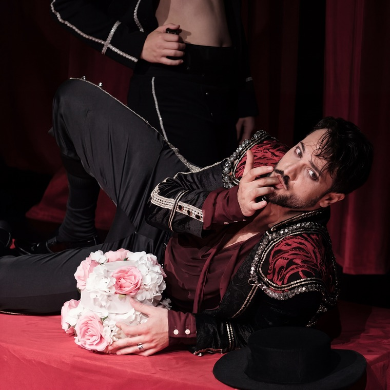
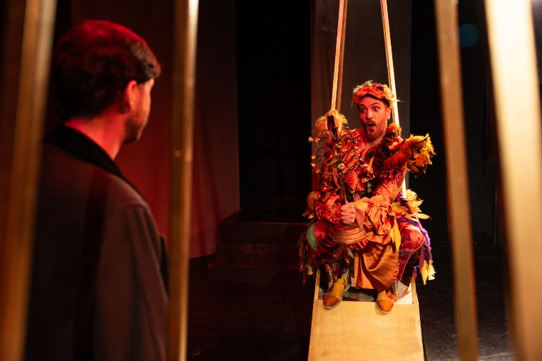

15 June 2026 · 20:30
LUKA JOZIC
Baritone

Baritone
Luka Jozic is a Serbian baritone based in Novi Sad, recognized for his commanding stage presence, musical intelligence, and natural dramatic instinct. His repertoire is anchored in Mozart, with major roles including Don Giovanni, Count Almaviva, Papageno, and Guglielmo, and appearances across leading houses in Serbia and abroad.



